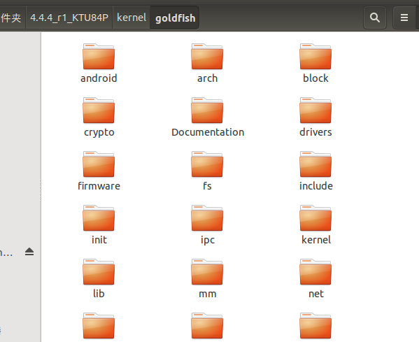
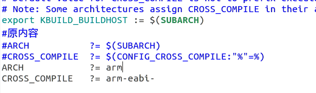

下载编译Android内核
- 发现有一个写的比我好很多的
- Android系统内核编译及刷机实战 （修改反调试标志位）
了解
- 各个版本内核源码项目所对应的下载命令：
1 | $ git clone https://aosp.tuna.tsinghua.edu.cn/kernel/common.git |
- 各个内核项目所支持的设备
goldfish项目包含适用于所模拟的平台的内核源代码。msm项目包含适用于 ADP1、ADP2、Nexus One、Nexus 4、Nexus 5、Nexus 6、Nexus 5X、Nexus 6P、Nexus 7 (2013)、Pixel 和 Pixel XL 的源代码，可用作使用 Qualcomm MSM 芯片组的起点。omap项目用于 PandaBoard 和 Galaxy Nexus，可用作使用 TI OMAP 芯片组的起点。samsung项目用于 Nexus S，可用作使用 Samsung Hummingbird 芯片组的起点。tegra项目用于 Xoom、Nexus 7 (2012)、Nexus 9，可用作使用 NVIDIA Tegra 芯片组的起点。exynos项目包含适用于 Nexus 10 的内核源代码，可用作使用 Samsung Exynos 芯片组的起点。x86_64项目包含适用于 Nexus Player 的内核源代码，可用作使用 Intel x86_64 芯片组的起点。hikey-linaro项目用于 HiKey 参考板，可用作使用 HiSilicon 620 芯片组的起点。
下载
创建文件夹
mkdir kernel
下载内核文件
goldfish 是Android模拟器使用的
git clone https://aosp.tuna.tsinghua.edu.cn/kernel/goldfish.git
- 这里用的是清华镜像，谷歌的反正总是连不上。fq也不行

获取分支
- git branch -a

- git branch -a
下拉对应文件
- 这个3.4看个人需求，比如我下载的是4.4.3-r1的源码，编译刷机后，手机里面的关于手机。内核是3.4.0
- git checkout remotes/origin/android-goldfish-3.4

编译内核
配置环境变量
- $ export PATH=$PATH:~/源码目录(如果下载了Android源码)/prebuilts/gcc/linux-x86/arm/arm-eabi-4.8(这个有的是4.6)/bin
- [gcc交叉编译工具链-没下载Android源码的点这里]( git clone https://aosp.tuna.tsinghua.edu.cn/prebuilts/gcc/linux-x86/arm/arm-eabi-4.6)
- goldfish 目录下找到 Makefile 文件修改

- 在goldfish目录下 执行
- make goldfish_armv7_defconfig
- 编译开始
- make
- make goldfish_armv7_defconfig
- 成功截图

虚拟机使用编译内核
- 启动指令
- 需要先lunch一下编译的android镜像
- emulator -kernel 路径/kernel/goldfish/arch/arm/boot/zImage &

- 本文链接：https://www.wl960127.top/posts/29775/
- 版权声明：本站内容均为个人学习笔记,不涉及商业用途，仅提供学习参考,第三方摘录已署名链接,未署名请评论添加,转载署名来源即可。
分享